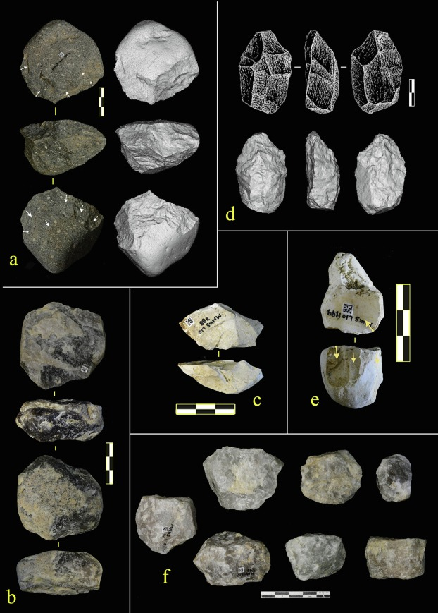

Olduvai Gorge was known for Oldowan (Mode 1) industry...
Louis Leakey recovered a Paranthropus boisei skull from Olduvai Gorge and named it “Nutcracker Man.” Archaeologists believe that the “massive chewing mechanisms of these species” indicate a diet that included “seeds or fruits with a hard outer coating.” Homo habilis is also known from Olduvai Gorge, who lacked the “heavy chewing muscles and large teeth,” but instead, have a larger brain. (Chazan)
The Leakeys demonstrated that over half of the stone tools discovered from Olduvai Gorge were choppers. They also identified the Developed Oldowan, with mostly “spheroids and sub-spheroids” tools. (Leakey)
The HWKEE fossil assemblage preserves a diverse fauna. The carnivore tooth marks and butchery marks may indicate that the early hominins competed with dangerous carnivores for “animal resources and likely scavenging from them.” (HWKEE)
The stone tool assemblage at MNK Skull site mainly has “a core and flake technology.” While “freehand knapping” is prevalent, “bipolar flaking” is also substantial. (de la Torre et al.)
Olduvai Hominid 5 is a nearly complete cranium of an adult male Paranthropus boisei

left: Excavation work on the slope where the wildebeest bones were concentrated in 2012; right: One of the wildebeest carcasses recovered in 2012

(A–C) Bifacial alternating partial reduction in phonolite (A), quartzite (B) and chert (C). (D) Example of bifacial simple partial exploitation in quartzite. (E) Bifacial abrupt partial scheme in chert core. (F) Quartzite bipolar cores.